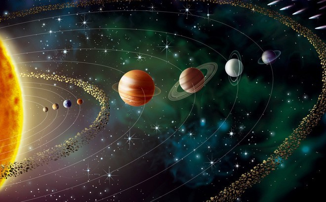

Hệ mặt trời
Hệ Mặt Trời là hệ hành tinh gồm có Mặt Trời ở trung tâm và các vật quay xung quanh. Hệ Mặt Trời được hình thành từ sự suy sụp của một đám mây phân tử khổng lồ cách đây gần 4,6 tỷ năm. Đa phần các thiên thể quay quanh Mặt Trời, và khối lượng tập trung chủ yếu vào 8 hành tinh có quỹ đạo gần tròn và mặt phẳng quỹ đạo gần trùng khít với nhau.